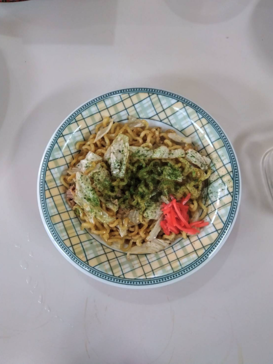
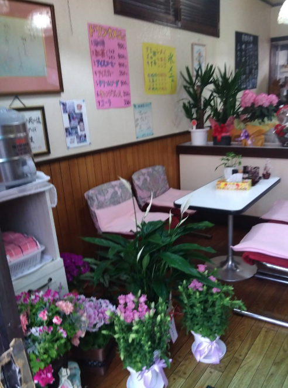
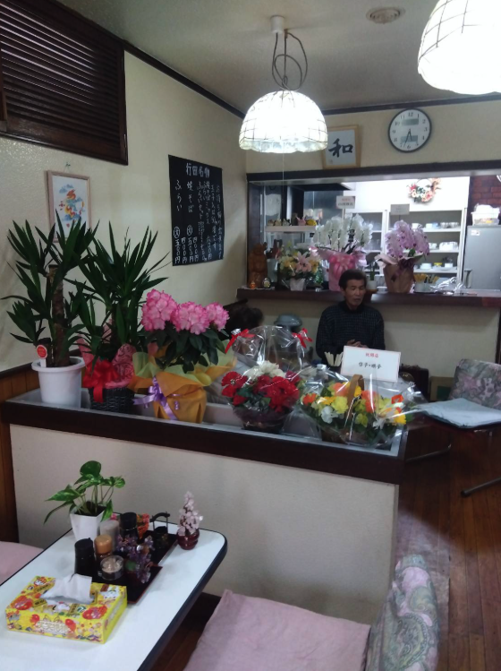

行田の街角で、
昔ながらの一杯とフライを。
埼玉県行田市忍にある珈琲苑 憩は、地元で長く親しまれてきた喫茶店です。行田名物のフライや焼きそば、コーヒー、ソフトドリンクを、どこか懐かしい店内でゆったりとお楽しみいただけます。買い物や街歩きの途中に、ほっとひと息つける一軒です。
メニューを見る埼玉県行田市忍にある珈琲苑 憩は、地元で長く親しまれてきた喫茶店です。行田名物のフライや焼きそば、コーヒー、ソフトドリンクを、どこか懐かしい店内でゆったりとお楽しみいただけます。買い物や街歩きの途中に、ほっとひと息つける一軒です。
メニューを見るフライと焼きそばを中心に、コーヒーやソフトドリンクも楽しめます
フライ
行田名物として親しまれる、気軽に味わえる定番メニューです。
400円〜

焼きそば
もちっとした麺にソースが絡む、昔ながらの味わいです。
400円〜

ドリンクメニュー
コーヒー・紅茶は400円、ソフトドリンクは350円からご用意しています。
350円〜400円
1/3
フライ・焼きそば・ミックスの軽食に加えて、コーヒー、紅茶、ソフトドリンクをご案内しています。テイクアウトは5枚以上から対応予定です。
昭和の雰囲気が残る、くつろげる空間です


珈琲苑 憩
〒361-0077
埼玉県行田市忍２丁目４−７
11:00〜16:00（金曜日〜火曜日）
水曜日・木曜日
店舗前には駐車スペースをご用意しております。お車でのご来店も歓迎です。